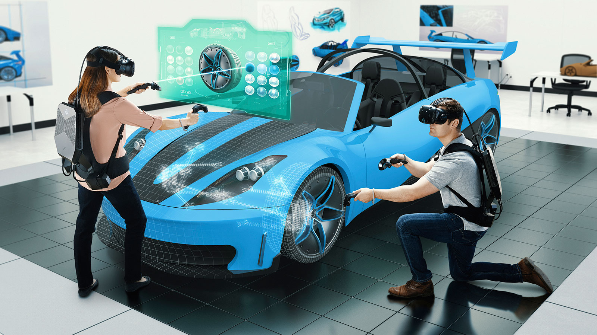
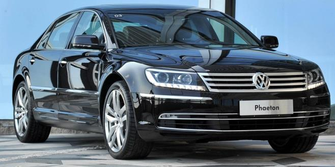
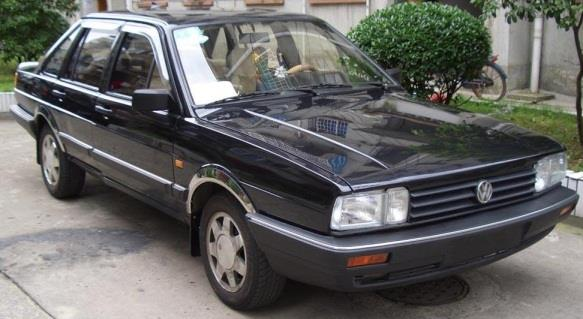
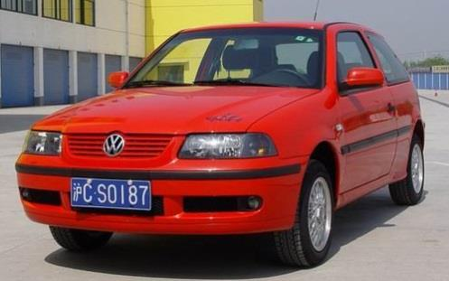
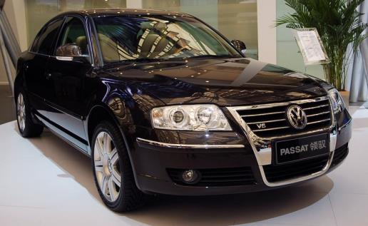
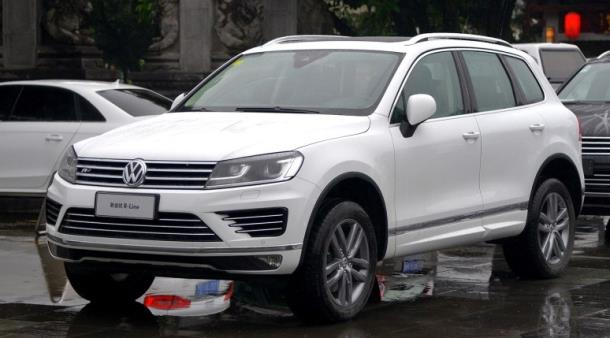
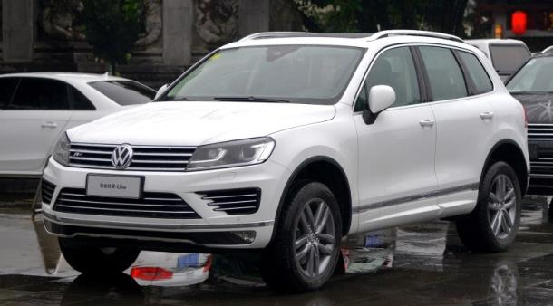

产品系统设计 Product System Design
Table of Contents
1 产品系统设计概述
1.1 系统概念
1.1.1 系统论
核心思想: 整体观
- 古希腊的系统观：部分组成整体
- 贝塔郎菲(Bertalanffy奥地利生物学家)的系统论1940s：相互作用诸要素的综合体
- 《关于一般系统论》
- 《一般系统论基础发展和应用》

1.1.1.1 贝塔朗菲的系统区分
元素的数目、种类、关系

1.1.1.2 系统工程
阿波罗登月计划: 1960s末，耗资300亿美元，42万人、120所大学和研究所、2万家企业参加。
- 共制作近700万个零件，动用600台计算机。

1.1.1.3 系统论思想的作用
- 对分析认识与设计有关的各种因素有很好的指导意义
- 强调综合与创新是其根本目标(对目标把握和对相关要素的认识)

1.1.2 系统定义
- 系统由若干要素以一定结构形式联结构成有某种功能的有机整体。
- 表明要素与要素、要素与系统、系统与环境三方面关系。

1.1.3 产品系统中的人与物
- 人的整体与部分
- 物的整体与部分
1.1.3.1 人的整体与部分
成员承担不同角色,发挥团队优势,完成个体难以企及的任务。
- 工厂同时生产三种产品,可采取两种方法:
- 个: 三个设计师分别设计,结果可能三个产品没有共通之处
- 集: 协同合作寻求共同之处,信息、资源共享,节约时间,提高效率,降低成本。
1.1.3.2 物的整体与部分
- 个: 一件产品可被视为具某种结构和功能个体,即由不同材料和工艺制造部件组成整体。
- 集: 一件产品也可被看作一个由各种要素或子系统构成系统。
1.1.3.2.1 物的系统
- 构成产品要素可以是某个部件或构件,也可以是一个操作系统或元器件。
- 要素品质和组成结构影响系统整体质量。
- 多个不同产品,如在目标诸方面有统一性,可能集成为一个体系。
1.1.3.2.2 物的类别 (种与类)
- 一个类型产品包含各种品种,如家具类产品包含木制品和金属制品等。
- 系列化产品种与类系统关系具体形式。
- 层次分类法:体现产品系统构造中逻辑关系,其相关性明显,依存关系突出。
- 平行分类法:反映系统构造可塑性。
1.2 系统组成
- 系统由多个事物构成有序集合体。
- 系统中各个构成元素相互作用、相互依存。
- 系统通过边界与周围环境相分离,成为特定集合,又通过输入和输出信息与周围环境相联系。

1.2.1 系统组成条件
- 两个以上要素组合而成有一定结构整体,可看成一个系统。
- 条件一:包含至少两个元素;
- 条件二:元素按某种方式相互联系。

1.2.2 系统组成特性
- 相对性：一部机器只是生产系统的一个元素。但从这台机器角度看，各零部件构成一个机器系统。
- 动态性：系统中各个组成部分相互作用和整体发展变化。
- 层次性：系统本身从属更大系统。一个系统可包含若干子系统，子系统也可包含若干子系统等。

1.2.3 系统组织
- 系统组织：要素、结构、子系统、系统层次。
- 系统性质由要素及其相互关系决定

1.2.3.1 系统要素
系统基本成分,系统存在基础
- 产品结构要素：分解产品为零部件，比较零部件功能、结构。
- 产品外观要素：曲线 vs 直线
1.2.3.1.1 产品结构要素

1.2.3.1.2 产品外观要素
1.2.3.2 系统结构
系统内各要素间相互联系作用的方式或秩序 (时空排列组合)。
- 结构保持整体性及功能依据。
- 结构好坏由要素间协调作用体现。
- 矩阵结构、树形结构、网络结构

1.2.3.2.1 矩阵结构
在内部关系不明确情况下、只表示单位与单位间的关系

1.2.3.2.2 树形结构
元素间存在一对多树形关系，分层扩展 (树根->树干->树枝->树叶)。
- 包含从属关系、并列关系。

- 不同车身结构设计生产出两厢和三厢宝来轿车、途安小型MPV、开迪货运车、小型SUV-TIGUAN、速腾、明锐、高尔伏等。
1.2.3.2.3 网络结构
单位间存在概念性相互关系,表示集团或群体存在

包含手机、中继站、卫星传送等要素。

1.2.3.3 子系统
子系统Subsystem可看成一种模块
- 子系统功能由所含元素和模块结构提供。
- 系统每部分应尽可能独立于其它部分。

1.2.3.3.1 子系统设计
在设计中表示构件，封装类行为，通过接口访问功能。为确保子系统在模型中可互换，有以下设计规则：
- 子系统内部元素不可见
- 子系统外部元素不依赖于内部元素;
- 子系统只依赖于元素接口，不依赖于外部模型元素。
- 例：电脑主机由CPU、显卡、硬盘、主板、机箱、电源、光驱、内存等子系统组成。

1.2.3.3.2 系统分为子系统的条件
系统规模太大，元素很多、差异不可忽略
- 分为不同部分，按各自模式组成若干子系统，再合为整系统。

1.2.3.3.3 子系统与元素差异
- 元素也是系统的组成部分，但有基元性 (无需再分)，元素不具系统性，不讨论结构。
- 子系统有可分性、系统性，需讨论结构，对母系统相对独立。
1.2.3.4 系统层次
- 物质层面
- 认识层面
- 行为层面
1.2.3.4.1 物质层面：系统内部秩序
- 系统内部在结构或功能方面形成层级（对复杂系统处理的基本方法）。
- 层次有多样性,可按系统质量、能量、运动状态、空间尺度、时间顺序、组织化程度等划分。
- 例：产品质量等级分为合格品 (一等品、二等品等) 和不合格品 (次品和废品)

1.2.3.4.2 认识层面：对系统阶段性认识反映
- 认识和表达事物思维过程在系统认识与理解中的反映,体现人们对系统认识发展步骤。
- 同一系统,可有不同层次划分。
- 例：人的需求分生存、享受和发展三个层次，取决于生产力水平和经济制度（马克思和恩格斯）。
- 例：人的需求有七个层次: 生理->安全->归属和爱->自尊->求知->审美->自我实现（马斯洛）。
1.2.3.4.3 行为层面：对系统的组织和规划
通过对系统层次划分、组织和规划,实现对系统高效管理、运行和维护。

1.2.4 产品系统构成
- 产品系统与任何系统一样,宏观由物质、能量和信息构成。
- 存在方式和属性上表现为要素、结构和功能因素。
1.2.4.1 产品系统构成之要素
一个产品包括功能、结构、材料、工艺、色彩、纹理和界面等要素。
- 各个不同产品也会组成系统,这里产品就成为子要素和子系统。
1.2.4.2 产品系统构成之结构
若干要素相互联系相互作用方式
- 结构对系统内在关系综合反映,系统保持整体性及有一定功能内在依据。

1.2.4.3 产品系统构成之功能
系统与外部环境相互联系和作用的过程秩序及能力称为系统功能。
- 系统功能体现与外部环境间物质、能量和信息输入与输出的变换关系。
- 外部环境包括用户使用情景、生态保护、社会文化、经济发展和技术支撑等。
- 系统功能发挥,受环境变化和系统内部结构制约。
- 系统与环境相互作用演化,有可能使系统改变或失去原有功能。
1.2.5 产品系统与环境
系统通过边界与周围环境相分离而成为一种特定集合
- 通过输入和输出物质、能量或信息与周围环境相联系。输入与输出间的转换过程即系统作用。
- 系统不孤立存在,总与周围事物发生关系。系统接受环境影响(输入),同时对环境施以影响(输出)。

1.2.5.1 系统功能
- 系统在运行过程中所有效用(用途)和表现出的能力(性能指标)。

1.2.5.1.1 产品功能
做什么用 (以功能命名, 如剃须刀、菜刀、理发剪、指甲剪)
- 功能失效须修理,否则报废。
- 功能减弱、功能不足、功能过时促使产品淘汰。

1.2.5.1.2 功能是一个过程
体现系统对外部的作用能力 (三要素: 输入、输出和转换)
- 由系统内部结构决定，由系统整体运动表现，系统内部固有能力的外部体现。
- 功能发挥受(1)内部结构制约和决定 (2)环境变化制约

1.2.5.2 系统环境
- 系统之外所有事物或存在称为该系统环境。
- 环境是系统存在的外部条件。环境对系统性质起一定支配作用。
- 系统整体性在系统与环境相互联系中体现。
- 系统和环境间通常有物质、能量和信息交换。
1.2.5.3 产品设计与环境
- 产品设计与自然环境
- 产品设计与社会环境
- 产品设计与技术环境
1.2.5.3.1 产品设计与自然环境
包括资源、生态和地理环境
- eco-friendly products

1.2.5.3.2 产品设计与社会环境
包括社会制度、民族文化、国际关系等
- 高科技产品会给社会带来深刻影响,社会因素也对产品生产或使用发生促进或制约效果。
- 现代产品大量参与国际市场竞争,市场环境成为产品开发重要因素。
- 产品对象是人，消费观念对产品发展起导向作用。

1.2.5.3.3 产品设计与技术环境
包括设施环境和协作环境
- 设施环境：飞机地面导航系统、船舶卫星定位系统、高速公路和加油站成为汽车运行基础设施。
- 协作环境：周边技术协作,如材料与燃料供给,废弃物回收等。
1.2.5.3.4 例：厨房吸油烟机产品系统环境
在烹饪时会有油烟污染厨房
- 吸油烟机主要功能将厨房油烟排到建筑物外。
- 对大环境而言,吸油烟机需改进,使油烟在排到室外之前被过滤。

1.3 系统属性(特征)
1.3.1 整体(涌现)性
- 所有组分构成统一整体,有整体结构、特性、状态、行为、功能等。
- 系统要素相互联系和作用,形成有机、协调整体，或有涌现性(突现性)产生。
- 例：单个物质分子没有温度、压强,大量分子聚集为热力学系统,就有可用温度、压强表示整体属性。
- 例：单个轮子不可骑，而单轮车表现出可骑性质称为系统整体涌现。
1.3.1.1 涌现特征
- 结构涌现
- 层次涌现
1.3.1.1.1 结构
不同结构方式,即组分间不同相互激发、相互制约方式,产生不同整体涌现性。
- 例：同样原子成分按不同自构方式经过化学反应形成性质不同分子。
- 例：由同样成员组成企业按不同方式组织和管理,可产生截然不同生产效益。
- 整体属性取决于组分特性。并非任意元素经组织、整合就能产生某种整体涌现性。
1.3.1.1.2 层次
复杂系统通过一系列中间等级整合逐步涌现。
- 每个涌现等级代表一个层次,每经一次涌现形成一新层次,
- 从元素层开始,由低到高逐步组合发展形成系统整体层次。
- 可将复杂事物按层次分解为若干简单事物组合。

1.3.1.2 产品设计的自组织性
产品设计系统由内部及系统与环境交叉作用结果。
- 市场调查、需求分析和设计定位等组成元素环环相扣,组成一个牢固系统,
- 这些元素相互依存,若其中一个元素没发挥好应有作用,便会影响到与之相关其它元素所工作。
- 组成元素动态关联体现其自组织性。

1.3.2 有序关联性
系统中各层次结构有秩序地工作
- 所有元素或组分按该系统特有方式彼此关联、作用、激励、补充和制约。
- 按一定规律（规则、重复和因果关联性）体现时空状态：矩阵、树形、网络结构
1.3.2.1 产品设计的层次性

在不同技术、文化背景下,针对不同设计解决方案可能呈现不同元素层次优先级。
- 例：产品造型质量评价（功能因素、物质因素、美学因素）
1.3.3 动态稳定性
- 内部诸要素作用产生惯性,显现出动态平衡,维持稳定性。
- 当稳定性破坏,或系统构造有问题时,系统功能无法正常发挥。
- 稳定状态相对,运动状态绝对,在各种(不)正常输入与干扰信号下运动。
1.3.3.1 例：移动通讯系统
在网络作用下,系统各要素按某种秩序形成整体,要素间保持依存关系,且这种关系稳定、相互作用。
- 当手机需求量增加,移动通讯系统随之扩容,负载能力加强,反过来又会促进系统结构趋于优化。
- 无论哪个环节发生变化,其它环节必然与之相适应。这就是系统内部通过涨落保持稳定。

1.3.3.2 产品设计的动态开放性
- 设计为审美、使用习惯、行为方式和文化背景不同且不断更迭的人们提供解决方案。
- 开放性:接受新理念、新知识
- 动态性:消化新元素,满足新要求

1.3.4 其它属性
- 目的作用：由各元素、子系统协同完成特定功能。
- 反馈机制：据系统输入情况,从内部机制或外部因素改变控制过程,以改善系统输出。
- 规模效应：规模大小不同(要素数目和结构复杂程度)带来系统性质差异。
- 多元特征：系统多样性统一、差异性统一 (系列化产品设计)。
1.4 系统分类
1.4.1 自然-人工系统
自然系统:
- 宇宙星系、银河系、太阳系、自然生态系统（湿地）

人工系统:
- 人工物质系统: 人对自然物加工而获得的系统(城市交通、机械系统、控制系统、人机系统等)。
- 社会系统: 一定历史条件下,人们组成社会系统。
- 理论系统: 对自然与社会认识而建立理论体系。

1.4.2 简单-复杂系统
简单系统（线性）：
- 自然界中非生命事物及规律抽象成一种简单、受有限因素影响,能被还原和重复的系统。
- 例：微积分、牛顿力学、理想气体、机械结构(自行车转向系统)、电路系统。

复杂系统（非线性）：
- 耗散结构 (远离平衡的开放系统) 在与外界交换物质能量过程中，由非线性动力学机理,自动从无序形成并维持在时空或功能上的有序状态。
- 例：细胞、生物体、社会组织、生态系统。
1.4.3 开放-闭式系统
- 开放系统(open system): 与环境间既有能量交换又有物质交换的系统。

- 封闭系统(closed system): 与环境间只有能量交换而无物质交换的系统。
- 隔离系统(isolated system): 与环境间既无能量交换又无物质交换的系统(理想状态, 例：密闭储罐)。

1.4.4 静态-动态系统
静态系统：
- (控制)特性固定不变的运动系统(发动机运行)

动态系统：
- 由多种变量或参数构成，变量相互联系，并处在恒动中(例：城市交通系统或森林生态系统)

1.4.5 产品设计系统分类
- 平面产品设计: 图书、宣传册、卡片、招贴等
- 立体产品设计: 交通工具、家用电器、电子产品等
- 交互产品设计: 物联产品、机器人等
- 服务产品设计: 交通、医疗、社区服务系统设计(软硬件开发)
1.4.5.1 产品系统设计层次
- 外观设计：以外形整体及局部线条、图案、色彩、雕刻装饰设计为主。
- 造型设计：以内在结构和外在造型为研究对象,提出较全面设计方案。
- 详细设计：对功能、结构、造型、交互界面全面系统研究,明确定义功能,合理配置结构,对造型提出符合功能要求和消费倾向便于使用形式,对产品提出新系统设计方案。
- 工业设计：包括产品本身及包装、商标及展示提出富有创意新设计方案。
- 广义工业设计：对产品、对商品销售、对传媒、对企业形象、对产品品牌、对产品策划提出全面富有创意新设计方案。
- 人为事物设计：对人类各种需研究,对人类环境、居住、生活、学习、工作、服务、娱乐、体育、旅游、休闲、盛会提出全面富有创意新设计方案。
1.5 设计系统观
设计概念和领域不断扩大及系统观念强化,现代产品设计已将对象事物当作一个整体系统认识和研究
- 从全局出发,将各组成部分看作子系统或要素
- 通过整合,建立有机联系及系统与环境间有机关系

1.5.1 产品系统设计时空观
1.5.1.1 多种构成(空间)
- 把设计对象及有关问题,设计信息分类整理、设计目标拟定、人—机—环境系统功能分配、功能-结构-造型协调等视为系统
- 用系统方法分析和综合处理。
1.5.1.2 动态变化(时间)
产品设计一个由多要素和多方法构成的过程系统,需考虑从产品诞生到消亡整个生命过程。
- 产品设计过程是一个动态开放与外部环境（市场）交互过程：从产品战略到市场营销。
- 产品战略->基础研究->市场调查->产品企划->产品开发->产品设计->技术开发->生产->营销->回收再利用
- 经多个环节,产品要素不断变化和调整,形成动态设计系统。

1.5.2 产品系统设计的意义
- 专注整体与部分 (整体性) 及与外部环境 (综合性) 间相互关系,
- 找到处理问题最佳或最适合方法 (优选性)。

1.6 产品系统化特征
1.6.1 产品信息化促进系统化
- 信息本身已成为重要产品,实体产品强化为信息载体。
- 信息化已全面融合到产品生命周期中,从产品设计生产到推广销售和售后服务。
- 产品特征信息化 | 产品设计信息化 | 产品制造信息化与智能化
1.6.1.1 产品特征信息化
- 多功能复合化
- 便携化
- 智能与知识化
- 精神化

1.6.1.1.1 多功能复合化

随电子信息技术发展,改进产品结构和零部件电子元器件组成,扩大同一产品功能及使用范围。
- 例：集收、录、唱、视于一体家庭影院,在扩大功能同时利用数字技术提高产品效果和精度。
- 例：集复印、扫瞄、存储、打印为一体复合式办公设备。
1.6.1.1.2 便携化
电子元器件大量应用及信息技术发展,使产品结构改良,零部件数量减少,体积缩小,重量减轻。
- 产品便于操作、携带,运输及安装,同时节约能源和资源,降低成本。
- 1) 电子元器件替代部分机械零部件
- 2) 新材料支持。如,轻薄、高强度钛合金、工程塑料
- 3) 信息技术应用和计算机辅助设计与制造、精密机床、激光切割、亚微米刻蚀等技术

1.6.1.1.3 智能与知识化
把人们通过学习才能掌握知识和技术转化到产品中
- 各类智能产品: 自动吸尘器、送餐机器人、儿童学习机器伴侣。

1.6.1.1.4 精神化
对品味追求, 包括美学价值和象征意味等精神文化价值。

1.6.1.2 产品设计信息化
- 网络化协同设计
- 信息设计技术支撑
1.6.1.2.1 网络化协同设计
- 串行设计:
- 开发->设计->样品试制->修改设计->工艺准备->试生产->生产
- 并行设计:
- 初期就由开发设计人员、质量控制人员、生产制造人员、营销人员、协作厂家及用户代表等协同工作。
1.6.1.2.2 信息设计技术支撑
- 计算机辅助设计与制造
- 逆向工程
- 快速成型技术
- 虚拟制造与虚拟产品开发
- 全面质量控制体系
- CAD (Design) | CAE (Engineering) | CAPP (Process Planning) | CAM (Manufacturing)
直接从模型或实物获得几何数据,转化成零件图纸和加工程序。
- 将手工产品、甚至艺术品在短时间内加以复制,批量生产。

在CAD/CAM技术支持下,采用粘结、熔结、聚合作用
- 或化学反应等手段, 有选择地固化液体材料,快速制作出所需形态零部件。
以计算仿真、智能推理和预测为基础,对制造信息动态操作,虚拟制造过程和产品及消费或损耗过程。
- 以真实制造信息驱动虚拟设备,加工出虚拟却贴近实际的产品。
- 通过先进传感技术和声像技术,构成身临其境人机界面,提供虚拟消费,或提交虚拟试验与分析。
- 与实际制造比较,具安全性、经济性和速效性。

计算机收集整理用户对产品质量需求,转变成生产时间、成本、性能值,以此调整生产系统,指导设计。
- 确保顾客和市场反馈信息精确转移到产品开发每个阶段有关技术和措施中去。
- 确保使用性能前提下,减少冗余功能,降低成本,提高质量和延长寿命,使产品尽可能无维修,零件适时报废或回收利用。

1.6.1.3 产品制造信息化与智能化
- 信息化促成精益生产、敏捷生产和柔性生产方式
- 自动化机器生产机器、控制机器
1.6.1.3.1 信息化促成精益生产、敏捷生产和柔性生产方式
应对个性化需求和复杂精细、功能多样产品制造要求。
- 精益生产：消除品种切换、产能不足或过剩浪费。
- 柔性生产：精益生产组成部分,高度适应市场需求变化,通过数控机床等通用设备方便品种切换。
- 敏捷制造：以市场为导向,组织企业生产,并保持产品开发技术领先。

1.6.1.3.2 自动化机器生产机器、控制机器
计算机技术广泛应用于设计开发系统、生产系统及管理系统。
- 工业化使人肢体得以延伸,信息化使人大脑得以延伸,使人们从一部分脑力劳动中解放出来。

1.6.2 产品系列化促进系统化
相互关联成组、成套产品
- 系列化形式：品牌系列、成套系列、单元系列
- 系列化意义：商业意义、生产意义
1.6.2.1 系列化形式
品牌系列 | 成套系列 | 单元系列
1.6.2.1.1 品牌系列
- 例：同一品牌家用电器
1.6.2.1.2 成套系列
由多种独立功能产品组成一个产品系统。
- 例：成套办公产品,既有各自功能,又组成完整办公系统。

1.6.2.1.3 单元系列
单元产品间有某种相关性和依存关系,构成完整产品系列。
- 例：母子电话机、儿童手表与父母手机相连等。

1.6.2.2 系列化意义
- 产品系列化的商业意义
- 产品系列化的生产意义
1.6.2.2.1 产品系列化的商业意义
通过增加产品覆盖面和提高产品适应性来提高市场竞争力。
- 系列产品以多变功能或要素组合,适应多极市场格局和快速变化市场需求。

1.6.2.2.2 产品系列化的生产意义
柔性生产：
- 灵活多样地小批量生产多种产品或定制单件特种产品。
- 随用户需求变化和产品改进,开发重新组合换代产品,无需全新产品替代老产品。
- 跨地域、跨行业分工协作模块化生产。如航空器。
刚性生产：
- 设计出系列标准模块,成套设备大批量刚性生产
- 降低生产成本、存贮费用、用户耗费维护和修理费。
- 例：电气开关和插座,通过标准组件不同组合方式形成不同规格和功能产品。
1.6.3 产品商品化促进系统化
企业为谋求生产系统快速反应市场变化,打破生产和营销分离状态。
- 生产企业调整组织结构、管理体制及工作方式;
- 向产品设计、制造、流通、市场连接紧密化、一体化方向努力。
- 由商品化发展到服务化系统设计。

1.6.4 产品生态化促进系统化
生产制造业已成为大量废弃物(包括物料废弃物、能源废弃物和产品使用终结废弃物等)主要源头。只用见污治污未端治理方式不能从根本上解决污染问题,需从绿色设计入手。
- 1) 立足产品或产品部分可重复使用
- 2) 立足产品或产品部分可回收翻新多次利用
- 3) 产品在使用寿命完结时可安全地处理
- 绿色产品在生命周期全程中,符合环保要求,对环境无害或危害极少,资源利用率高,能源消耗低。
- 绿色设计(生态设计)着重考虑产品环境属性,即可拆卸、可回收、可维护、可重复利用等特性,
- 并确保产品应有功能、使用寿命和质量。
1.6.5 产品多元化促进系统化
市场需求趋于多样化、个性化,开发采用新技术、新材料、新结构或新形式全新产品。
- 满足不同年龄、性别、文化消费需求

1.7 作业一
- 找一个产品系统实例做成PPT。
- 反映您对产品系统设计的整体认识，或系统某(几)方面的内容，甚至提出自己对系统的看法。
- 9月1日(周日)23:00前发送到anhongz@outlook.com
- 文件名: PSD1-标题-姓名
- 文件类型: 演示文稿或PDF文档
2 产品系统设计方法
2.1 系统方法论
理论-经验 | 定性-定量 | 数学-非数学 | 精确-近似
2.1.1 还原论与整体论
- 还原论
- 整体论
- 还原论 & 整体论
2.1.1.1 还原论
把整体分解为部分，通过认识部分，把握整体特性。分析（分解、还原）—重构
- 把系统从环境中分离，独立出来研究;
- 然后把系统分解为部分，把高层次还原到低层次,
- 用部分说明整体，用低层次说明高层次。

2.1.1.2 整体论
- 许多宇宙奥秘源于整体涌现 （生成论：多源于少,复杂生于简单）。
- 社会实践越来越大型化、复杂化,一系列全球问题形成,突出强调从整体上认识和处理。
例: 由分析法可算出海水体积，每天把海水舀到地面量一旦定下来,就可算出到哪一天将把地球海水舀干。
- 但这不符合海水占地球70%巨大规模实际整体情况。
- 世界演化,系统并非永恒不变。只有用生成演化观点,才能作出科学说明。

2.1.1.3 还原论结合整体论
- 见树木：还原到元素层次，理解局部精细结构，避免猜测、笼统。
- 见森林：从整体上把握事物、解决问题，避免零碎。

2.1.2 定性描述与定量描述
- 质：定性认识(对象的性质、特点、发展变化规律)不正确,会把认识引向歧途。
- 量：定量描述可深入准确地把握系统行为特性（数学公式描述物体运动规律）

2.1.3 局部描述与整体描述
- 整体由局部构成,整体统摄局部,局部支撑整体
- 描述系统包括描述整体和局部两方面
- 在系统整体观对照下建立对局部描述,综合所有局部描述以建立关于系统整体描述。
2.2 系统方法特点
整体与部分，对象与环境相互联系、作用、制约，综合精确考查对象
- 达到整合优化处理设计问题（包括子问题）的目的。
2.2.1 整体性
各种对象、事件、过程等是一个合乎规律，由各要素组成的有机整体。
- 各子系统各具特定功能和目标，分工协作，实现系统整体功能和目标。
- 从事物 (系统) 整体出发，着眼于系统总体最高效益，而不局限于个别子系统。

2.2.1.1 产品系统应用
- 增强系列产品灵活性、统一性和持久性。
- 强调产品在造型、色彩等形象因素上统一,以保证使用环境获得秩序感。
2.2.2 综合性
通过辩证分析和高度综合，使各要素相互渗透、协调达到整个系统最优化。
- 系统是一些要素为特定目的而组成的综合体，如建筑功能、环境、技术、人文、艺术等组成综合体;
- 对任何事物研究，须从成分、结构、功能、相互联系方式等综合系统考察。
2.2.2.1 产品系统应用
汽车驾驶、发动机、底盘、内饰、外型等组成综合体
- 例：汽车高加速性与低油耗系统思考。
- 例：标致307两厢车改成三厢车，要综合考虑车头、车身造型与车尾协调。

2.2.3 细分化
对组成要素进一步细分为零件材料、结构、造型、表面处理、色彩等
- 保证符合功能与结构要求，并精细化设计。

2.2.4 最优化
取得最好功能效果，选择出解决问题最好方案。
- 最优目标：在条件约束下,为系统确定最优目标,运用数学方法获得最佳解决方案。
- 实现目标的过程和方式最优：从整体、全局、相互联系上来研究设计对象及有关问题。
2.2.4.1 产品系统应用
- 产品优化：功能完整、结构合理、造型美观、成本经济。
- 制品过程优化：设计、生产、管理，产品经济性、维护性、包装运输、安全性、可靠性等
2.2.4.2 例：奔驰C系轿车对比前几代系统优化
- 功能完整、结构合理、造型美观、成本经济、操控优异。
- 安全性指标也达最优。
2.3 产品系统分析与综合法
2.3.1 分析与综合的基本概念
分析与综合是一个扩散和整合交织的过程。

2.3.1.1 分析
为设计提供解决问题依据，加深认识，启发构思。
- 为使设计问题构成要素和有关因素清晰显现
- 对系统结构和层次关系分解，明确系统特点，取得必要设计信息和线索。

2.3.1.1.1 系统分析内容
- 系统组分
- 系统组分关联方式
- 系统所处环境(特点)、互相影响、变化趋势
具体包括调查研究、目标确定、总体分析、宏观、微观模型建立、系统优化、系统方案综合、系统评价等
- 定量分析与定性分析相结合。
2.3.1.1.2 系统分析作用
- 系统分析(功能、环境、条件、可行性、费用、效果等)保证获得良好方案，避免大量返工和经济损失。
- 系统层层解析利于对分系统用以往经验和知识分析和处理，把复杂问题条理化、简单化。

2.3.1.1.3 系统分解
- 简单系统分解：结构要素分解（例：电冰箱分为压缩机、冷凝器、蒜发器、箱体、温控器等）。
- 其它系统分解：系统目的明确化(总目的、子目的)、系统评价、系统研制进程安排等分解条理化。
- 分解程度(数目)适当，过细花费精力，也使系统综合变得困难，过粗不利于分析。
- 分解位置，应在分系统间联系最少处，减少各分系统分析干涉。
2.3.1.2 综合
- 对分析结果归纳、整理、完善和改进。
- 根据分析结果，经评价、整理、改善后，决定事物构成和特点，确定设计对象基本方面。
- 尽可能作出多种综合方案，并按一定标准和方法评价、择优，选出最佳。

2.3.1.2.1 综合创新
- 分析——重构：由部分重构整体
- 对现有系统分析后加以改善,达到新综合;对尚未存在系统可收集分析类似资料后创造性设计。
2.3.2 产品系统分析与综合
- 系统是一系列有序要素集合，各要素间有层次关系和逻辑联系。
- 设计是动态过程，通过设计因素(功能、经济、审美)间信息传递相互调整和修正。
- 把诸因素层次及联系了解清楚,按预定目标综合整理出问题解答。

2.3.2.1 系统分析与综合原则
- 把内外影响因素综合分析
- 把局部与整体效益结合考虑，追求最佳效益。
- 依据目标性质和特性采取定量或定性分析。
- 遵循系统与子系统或构成要素间协调原则，使总体性能最佳。
- 遵循辩证观点，从实际出发，对情况周密调查，考虑各因素，准确反映客观现实。
2.3.2.2 系统分析与综合步骤
- 总体分析: 确定总目标及客观条件。
- 任务与要求分析: 确定为实现目标需完成任务及要求。
- 功能分析: 根据任务与要求，对系统及各子系统功能和相互关系分析。
- 指标分配: 在分析基础上确定对各子系统要求。
- 方案研究: 为完成预定任务和各指标，需制定各种可能方案。
- 分析模拟: 系统受多因素影响，当某因素变化时，系统指标随之变化 (因果关系由模拟和实验确定)
- 系统优化: 在方案研究和分析模拟基础上，从可行方案中选出最优方案。
- 系统综合: 对最优方案论证和具体化。

2.3.3 系统分析方法
系统分析是系统决策与设计基础。
- 从系统长远和总体最优出发，确定目标与准则，
- 分析各层次子系统功能及关系，及系统同环境相互影响。
- 在调查研究、收集资料和系统推理基础上，提出对系统输入、输出及转换过程若干可能方案。

2.3.3.1 投入产出法
Input-Output Technique 输入输出法
- 通用电器公司用于探求设想。
- 确定期望产出(结果和目标,明确输入输出) -> 决定投入 -> 利用智力激励法寻求投入产出关系。
- 同时确定限制条件，如成本不超过某值、坚固耐用等。

2.3.3.1.1 例: 天黑灯自亮问题
- 输入: 天黑下来, 输出: 灯自亮
- 根据入、出和限制条件，考虑相互关系，
- 运用创造性思维和逐步推敲明确入和出联系，分析出解决问题方案。

2.3.3.2 相关表法
探讨设计问题中相关要素间关系为目的
- 分解设计问题 -> 分析比较 -> 明确主次问题 (关系最重要、希望产生关系和无关系)
- 例：街道清扫系统要素相关表

2.3.3.3 PERT 法
Program Evaluation and Review Technique 评测复审法
- 1958年，美国海军特殊设计局发明PERT法，并应用于潜艇和导弹开发，使工期比预定时间缩短两年。
- 包括PERT/TIME、PERT/MAN-POWER和PERT/COST (时间、人员、费用)

2.3.3.3.1 利用PERT制订计划方法
- 基本图示符号
- 规则
- 基本步骤
- 圆圈: 事件结点，不需时间和资源。圈内为作业名称或数字
- 箭头线: 作业过程
- 虚箭头线: 两结点间无实际作业，仅示先后顺序
- 箭头线顺序发展（无回路）
- 结点编号逐渐增大，可跳号以补充修改作业，但不可重复编号。
- 符合实际工作程序。

- a. 制订整体计划 (时间、人、物与资金)。
- b. 分析确定所需全部作业项目。
- c. 构造网络。
- d. 计算日程。
- e. 配置资源。
- f. 预算费用。
- 在估计时间、资源等问题时，可按乐观、悲观、最可能情况估算，取平均值Te=(a+4m+b)/6
- 例：乐观3天完成、悲观10天完成、最可能5天完成 -> (3+4*5+10)/6 = 5.5天
2.3.3.3.2 大型儿童游乐玩具项目设计计划
应将时间、人员、费用，及资源配置等因素估计或计算进去，以使系统开发工作过程得到有效控制。
- a 调查准备 (a1准备调查记录本卡;a2研究调查场所;a3确定调查人员;a4准备调查用具。)
- b 实地调查 (b1现状调查;b2资料整理。)
- c 收集有关大型游乐玩具资料 (c1杂志、商品选购指南;c2市场上有关玩具。)
- d 有关儿童身体发育资料 (d1图表化处理;d2按年龄等分类处理。)
- e 活动分析 (e1活动种类;e2动作分析;e3把握活动意义。)
- f 分析游乐时使用物品 (f1分析物品;f2物品特征;f3分析游戏与物品关联性。)
- g 综合化 (g1:d、e、f关系明确化;g2图形化。)
- h 展开 (h1意念性草图;h2比较 c、g;h3设计定位;h4草模。)
- i 基本设计 (i1基本形态、结构确定;i2预想图绘制;i3细部审核;i4修正。)
- j 制作模型 (j1绘制模型工程图纸;j2选择模型材料;j3模型制作完成;j4拍摄模型照片;j5对模型审核。)
- k 评价
- l 试销准备 (l1创意和设想;l2调查;l3根据调查结果修改设计预想图;l4修改或重新制作模型;l5信息整理。)

2.3.3.4 因果分析图法
Cause and Effect Diagram 鱼骨图
- 以图示方法揭示关系而认清相关因素间影响。
- 着眼问题结果和对问题结果产生影响的原因。
- 箭头顶端表示设计问题或其它问题要点，大、中、小骨分别表示大、中、小原因

2.3.3.4.1 绘制鱼骨图方法
- 确定问题要点 (要分析项目)，如机械加工为什么出现废品。
- 确定大原因，如机床、方法、操作者等。
- 继续找出中原因和小原因及更细原因。
- 对关键原因作标记以便进一步研究。(鱼骨图可转化成树形图)


2.3.3.5 雷达图分析方法(radar chart)
一种多变量对比分析技术,形似导航雷达图或蜘蛛网。
- 雷达图可对多组变量多种项目对比,反映数据相对中心点和其它数据点变化情况。
- 适于对多属性体系结构描述对象作出全局、整体评价(如：判断产业发展趋势、确定产业范围边界)
2.3.3.5.1 图示说明
- 档次渐高,边缘为最高档,由若干同心圆组成。
- 同心圆向外引若干条射线,等间距。
- 每个圆代表一定分值,由中心向外分值增加。
- 每条射线末端标明指标。
2.3.3.5.2 例：产品功能属性用户评价雷达图
功能性(实用)、技术性、艺术性(造型)、舒适性(人机)、经济性(性价比)、环保性等评价。
2.3.3.6 关联图法(网络)
分析原因一结果、目的一手段等各因素间互相影响、制约
- 据逻辑联系，寻求最有效解决措施。
- 箭头由原因指向结果，或由手段指向目的，或由因素指向问题等。
- 重点项目可用双框。

2.3.3.7 矩阵图法
- 运用矩阵形式多维分析。将问题分解，找出全部因素并分类，
- 把属于因素群R的因素R1、R2、…、及属于因素群L的因素L1、L2、…、排成行和列，
- 在行和列交点处表示出设想点，据以探求问题所在及解决问题方法。
2.3.3.8 复杂系统工程分析法
定性分析、定量分析、综合分析
2.3.3.8.1 系统分析工具
- 霍尔三维结构方法(硬系统方法论)
- 切克兰德软系统方法(软系统方法论)
- 并行工程方法
- 物-事-人理系统方法
- 螺旋式推进系统方法
- 综合集成方法——统计数据参数模型,人机交互,逐次逼近。
2.3.3.8.2 系统分析前提条件
建立系统模型，描述系统某一方面本质属性
- 并能以确定形式(文字、符号、图表、实物、数学公式、计算机建模)提供该系统知识,
- 且据此(系统模型)对系统定性、定量、综合分析,
- 找出研究对象特征和发展规律。
2.3.3.8.3 系统模型
- 实体模型
- 相似模型
- 比例模型
- 文字模型
- 网络模型
- 图表模型
- 逻辑模型
- 数学模型
- 计算机模型
2.3.3.8.4 霍尔(Hall)三维坐标系表示的系统工程研究方法和步骤
时间、逻辑、专业三维结构
- 时间维：整个寿命周期 (规划设计-…->更新)
- 逻辑维：思维过程 (问题提出-…->实施)
- 专业维：专业知识排列 (工程-…->社会)

2.3.3.8.5 切克兰德软系统方法
社会经济系统中的问题往往很难象工程技术系统中的问题那样，事先将“需求”给定清楚，因而也难以按价值系统的评价准则设计出符合这种“需求”的最优系统方案。
- 切克兰德方法论的核心不是“最优化”而是“比较”与“探寻”
- 从模型和现状的比较中来学习改善现状的途径
- ①认识问题：收集与问题有关的信息，表达问题现状，寻找构成或影响因素及其关系，以明确系统问题结构、现存过程及其相互之间的不适应之处，确定有关行为主体和利益主体
- ②根底定义：初步弄清、改善与现状有关的各种因素及其相互关系。目的是弄清系统问题的关键要素以及关联因素，为系统的发展及其研究确立各种基本看法，并尽可能选择出最合适的基本观点
- ③建立概念模型：在不能建立精确数学模型的情况下，用结构模型或语言模型来描述系统现状。概念模型来自于根底定义，是通过系统化语言对问题抽象描述的结果，其结构及要素必须符合根底定义的思想，并能实现其要求
- ④比较及探寻：将现实问题和概念模型进行对比，找出符合决策者意图且可行的方案或途径。有时通过比较，需要对根底定义的结果进行适当修正
- ⑤选择：针对比较的结果，考虑有关人员的态度及其它社会、行为等因素，选出现实可行的改善方案
- ⑥设计与实施：通过详尽和有针对性的设计，形成具有可操作性的方案，并使得有关人员乐于接受和愿意为方案的实现竭尽全力
- ⑦评估与反馈：根据在实施过程中获得的新的认识，修正问题描述、根底定义及概念模型等
2.3.4 系统综合方法
在系统分析基础上提出全面完善的整体解决方案。
- 系统分析的反向过程，常常是一个创新过程，重构即综合。
- 功能求索法、整合重构法、产品定位法、产品基准法、系统优化法
- 标准化法、模块化法、平台化法、系列化法
2.3.4.1 功能求索法
确定总功能，通过总功能层层适度分解，构成若干子系统和功能元的有序组合。
- 明确功能系统基本构造和特点。
- 分功能求解：部分分功能已有可选部件,其余分功能需探索解决办法。
- 各分功能解法组合就是系统综合设计原理方案。

2.3.4.1.1 功能求索方法实施
- 借鉴汇集前人经验的设计手册、设计原理方案 (技术物理效应、物理原理等)
- 发挥创造性思维，利用创新技法提高设计水平和工作效率 (头脑风暴法、联想法、类比法)
2.3.4.2 重构整合法
- 在系统分析、分解基础上，将系统要素及其结构依据功能要求重新打散，建立新构成关系
- 由部分重构整体实现整合创新（分解与组合）
2.3.4.2.1 分解原理
- 事物本身由很多可分解功能组成,组成方式不同,总体功能将不同,满足不同需求,由分解到重组。
- 分解出主要功能，组成更多更好主辅搭配。
- 多种功能合在一起彼此影响,分离有利于各自特点发挥,或利于创新改进。
2.3.4.2.2 组合类别
- 主要功能与辅助功能组合
- 同种功能组合
- 无关功能组合
- 不同功能关系组合
2.3.4.3 产品定位法
将竞争产品作为参考对象,以自身产品体系完整性为开发目的,寻找设计突破。
2.3.4.4 产品基准法
据产品定位,选择行业领先产品作为产品基准,对结构参数、性能、尺度、外观提出对应方案。
- 例：尼康选择佳能产品作为其产品基准
| 佳能 | 尼康 |
| 1280万象素,5D全幅单反 | 1210万象素,D3 |
| 小幅单反1010万象素,40D | 1230万象素,D300 |
| 准专业数码1210万象素,G9 | 1210万象素,P5100 |
2.3.4.5 标准化方法
- 标准化要求产品各部件或某些种类产品间建立一种联系，实现零、部件可互换。
- 标准化要求合理制定产品品种规格以满足不同层次需求;
- 5种标准化形式：简化、统一化、系列化、通用化、组合化（标准接口）
2.3.4.5.1 标准化路径
- 制定高标准以提高产品质量;
- 在生产、流通、消费等方面全面节约人力、物力以降低成本;
- 在商品交换和服务方面保护消费者合法利益和社会公共利益;
- 保障人类安全、健康,创造舒适、宜人环境,有利于建立科学、文明、进步生活方式;
- 促进相互理解、交流,提高信息传递效率;促进国际间生产协作、技术交流和贸易等。
2.3.4.6 模块化方法
- 模块化换元与移植创新思维法则与标准化思想相结合产品系统设计整合创新方法。
- 模块产品中相对独立有互换性部件,在模块化系统中用于构成系统功能单元。
2.3.4.6.1 例：镜头模块化
EOS系列单反镜头模块
- 适马公司采用模块化方法为佳能和尼康公司提供一系列单反镜头(有对应接口)。
2.3.4.7 平台化方法
零部件可互换产品平台实现多种产品部件共享

2.3.4.7.1 例: 大众紧凑型轿车PQ35平台
既满足客户多样化需求，又实现规模效应，降低造车成本。
- PQ35 (P: 产品平台, Q: 动力总成横置, 3: A级车, 5: 第五代)
- PQ35平台车型：高尔夫5、奥迪A3、宝来、斯柯达明锐、大众SUV途观
2.3.4.8 系列化方法
- 通过对同一类产品发展规律分析、研究,
- 对国内外生产与需发展趋势调查和预测,
- 结合企业自身生产技术条件,
- 经过全面技术经济比较,
- 将产品主要参数、型式、尺寸、基本结构等做出合理安排与规划 (最佳数列排列)
- 以尽量少品种数来满足最广泛需求, 形成产品品种和规格标准化。

2.3.4.8.1 例: 大众系列产品





 

2.3.4.8.2 例: 相似功能系列
成套锅具系列
2.4 产品系统优化设计方法
- 指研究和寻求在给定条件下最佳解决问题方案(最合理参数、最好工作性能、最低成本等)。
- 使功能完整、结构合理、造型美观、成本经济
2.4.1 质量指标
- 稳定性：功能长期有效性及在下一次更新换代前保持其先进性与竞争性
- 准确性：预期目标与现实状况近似程度
- 快速性：设计速度及由设计到实现的时间
2.4.2 优化设计程式
发散 (广开思路) -> 创造(构想各种独创、新颖方案) -> 收敛(关键部位创新设计、附属部分常规设计)
2.4.3 优化方法
- 直觉优化方法
- 试验优化方法
- 进化优化方法
- 数学优化方法
- 专家系统(知识库)优化方法
- 模糊优化方法
- 其它优化方法
2.4.3.1 直觉优化方法
- 赁直觉和经验确定，如造型形态问题等。
- 取决于设计者知识广泛性及修养，并配合一些评价方法。

2.4.3.2 试验优化方法
应用环境: 产品本身机制不清楚，新产品系统设计经验不足，各参数对设计指标影响主次难以分清。
- 试验模型 (样机或模拟装置等)，经数次试验后据试验结果来优选方案。
- 或根据实验数据，构造函数，再求极值。

2.4.3.3 进化优化方法
渐变与突变，随时根据市场需求和竞争形势等不断更新换代。
- 价值工程从使用寿命期间功能价值出发一点一滴分析改进，使工程和产品达到优化。
- 适应性设计、变异性设计也一种进化优化，而开发性设计属突变彻底优化。

2.4.3.4 数学优化方法
简易优化法(如黄金分割)、图解分析法和数学规划法，分三个阶段:
- 将问题转换为数学模型，建立评价目标函数，考虑约束条件，确定参与优化的参数。
- 根据数学模型中函数性质，选用合适优化方法，并作程序设计。
- 运行程序，求出最优值，然后分析判断出最优设计方案或参数。
2.4.3.5 专家系统 (知识库) 优化方法
将专家知识和经验分类整理后纳入程序中，在输入原始参数后，模拟专家推理、判断与决策。

2.4.3.6 模糊优化方法
现实事物存在界限糢糊的特点
- 在模糊数学(模糊集合)基础上，定量处理影响设计方案的模糊因素。
- 给出一系列不同安全水平优化方案，供选择。
2.4.3.7 其它优化方法
多维图形法、图论法、准则法，以及大量创造性方法。
2.4.3.7.1 方案优化
适用于只有任务要求、用户要求或总功能要求，还没有原理方案的情况。
- 功能论方法为指导，在约束限制下，利用创造工程和功能技术矩阵产生多个原理方案。
- 再通过各种办法评价、筛选和决策。
- 在产品开发中有可能产生创新和飞跃。

2.4.3.7.2 参数优化
通过数学规划等在已有原理方案情况下
- 使参数具体化和优化，完成预定总功能方案设计和参数设计。
- 如图：零件的容差等级越低，成本就越低，但产品参数偏离目标值的可能性就越大，造成损失就越大。需优化进行平衡。
2.4.4 优化方法小结
- 优化贯穿于产品构思、计划、设计、制造、装配、使用、维修、改造直至报废全过程。
- 设计追求多目标 (性能、环境、成本、使用经济性)。为协调各方因素，不同指标高低均衡。
2.5 产品系统原型设计方法
2.5.1 模型与原型
- 模型：简化对象实体,用适当表现形式或规则描绘主要特征所得模仿品。
- 原型：用于研究、分析和验证的对象实体，保证客观性和有效性。
2.5.1.1 模型分类
- 按构造模型成分
- 按模型功能
- 按模型结构
2.5.1.1.1 按构造模型成分
- 实物模型
- 符号模型
2.5.1.1.2 按模型功能
- 解释模型(统计模型用于测试因果假设)
- 预测模型(通过统计模型和数据挖掘来进行预测新的数据或未来)
- 规范模型
2.5.1.1.3 按模型结构
- 标度模型(scale model): 与原型结构相同或相似, 但尺度缩小(如模型船舶、模型飞机)
- 地图模型(map model): 与原型有相同拓扑结构。
- 数学模型: 抽象模型, 与原型结构有内在联系,结构问题用数学语言描述,用数学方法分析和解决。
2.5.1.2 产品原型分类（按实体程度）
范围从概念草模到功能齐全样品（三维模型设计、分析和验证）
- 外观原型
- 概念原型 (用于快速检测设想)
- 实验原型 (用于证实产品功能)
- 样机原型 (全范围、全操作产品版本)
2.5.2 数字(解析化)原型与实体原型
2.5.2.1 解析化原型一般比实体化原型更具弹性
- 解析化原型产品一个数学上近似品,包含随不同设计选择而改变参数。
- 一般，改变解析化原型某个参数比改变实体化原型某个属性校容易，且允许作更大改变。
- 解析化原型用于缩小可变参数取值范围,而实体化原型用于对设计精雕细琢或确定。
2.5.2.2 检测不可预见现象需实体化原型
- 实体化原型经常揭示出与原型最初目标完全不相关不可预见现象。
- 相反,解析化原型无法揭示非基础解析模型(原型基于其上)部分现象。
- 因此,在产品开发尝试中,始终至少要建造一个实体化原型。
2.5.2.2.1 例: 开发太空实验室（方便间原型）
一项规模庞大系统工程,有许多子系统需反复实验改进。
2.5.3 原型的作用
- 原型可降低高值重复风险
- 原型可加快其它开发步骤
2.5.3.1 原型可降低高值重复风险
- 一个测试结果可决定一个开发任务是否将不得不重复。
- 适于高成本、新技术或产品特性重大变革而有高风险或不确定性产品。
2.5.3.2 原型可加快其它开发步骤
- 有时加入一个短暂原型化阶段可使后续活动比没有这一阶段时完成得快得多。
- 如果原型化阶段所需时间少于后续活动节省时间,则这一策略(原型化)适当。
- 有复杂几何形状部件的实体化模型使得模具设计者更快地细化和设计模具。
2.5.4 原型化技术
- 计算机3D建模
- 快速原型化——3D打印
2.5.4.1 计算机3D建模
用3D实体表现设计,每个实体通常用圆柱、块、孔等几何单元构造而成。

2.5.4.2 快速原型化——3D打印
- 快速成型技术(Rapid Prototyping)由3D System公司于1984年推出。
- 基本原理：分层制造，逐层叠加。
- 每次做一个横截面，就铺置一种材料或选择性地凝固一种液体。
- 材料：塑料、石蜡、纸、陶瓷和金属
- 3D打印也被用来制造假牙、人体骨骼器官等。
2.5.4.2.1 快速原型化技术特点
将一个实体复杂三维加工离散成一系列层片加工,大大降低加工难度
- 快速成型适合激烈产品市场竞争。
- 可制造任意复杂形状三维实体。
- 用CAD模型直接驱动,实现设计与制造高度一体化。
- 成型过程无需专用夹具、模具、刀具,既节省费用,又缩短制作周期。
- 技术高度集成。
2.6 产品系统过程设计方法
预制计划阶段 | 计划控制 | 探索问题状况方法 | 寻求构想 (Ideas) 方法 | 探索问题结构方法 | 产品造型设计方法 | 广义工业设计 | 新产品开发
2.6.1 过程设计方法概述
- 包括分析、创造、综合、发展、表达、反馈等阶段
- 系统、动态地解决设计过程中出现各类课题
- 产生具体、明确步骤和有针对性解决方法

2.6.2 预制计划阶段
2.6.2.1 系统研究
目的: 确定系统设计变量
- 明确问题组成要素，按重要性权衡出可控和不可控变量。
- 明确各变量间关系。
- 预测不由设计师控制的变量影响。
- 确定边界条件。
- 调节每一个决策变量数值，并预测依赖性变量数值。
- 选择决策变量和各种数值，以获得被权衡目标综合最优值或可行解。
2.6.2.2 价值分析
目的: 降低产品成本
- 按规定实施步骤(GB8223一1987)，价值创新分析。
- 将价值分析结果提交管理部门和设计组。
2.6.2.3 系统工程分析
目的: 在系统内各元件间取得内部相容性;在系统和环境间取得外部相容性。
- 确定系统输入和输出。
- 确定如何将输入转化成输出功能 (实施方案)。
- 选择或设计能实现上述每一个功能元件。
- 检测内部相容和外部相容结果。
2.6.2.4 人机系统设计
目的: 取得系统内人-机间内部相容; 系统与其所在运行环境间取得外部相容。
- 确定系统输入和输出。
- 确定将输入转化成输出所需功能。
- 确定人和机器间功能分配。
- 确定必要训练程序、辅助工作、人机界面设计和机器设计。
- 保证人-机-环境间相容。
2.6.2.5 设计时程计划
目的: 制定系统性工作程序与方法。
2.6.2.5.1 用甘特图 (横道图) 表示设计时程

例：工程由X、Y、Z 3项任务组成，X任务中，任务2)须在任务1)完成后才能开始。
- 这种甘特图只能用于单线工作, X、Y、Z 任务间的联系不能在图上反映出来。

图中箭头表示各项任务中各项工作间关系，带箭头直线上的数字为该项工作所需时间。
- 从事项1)到7)可有5条路线，其中所需时间最长的称为紧急线或关键路线。
- 紧急线上的工作提前或拖后都直接影响整个任务的提前或推迟。
- 图中所示工程紧急线为1)-3)-6)-7)。所需时间为9周。

- 确定元素或组分按什么方式相互关联形成整体,即研究和发现系统结构或元素分类。
- 描述任务进度。
- 图包含水平时间线和垂线。
- 通过画出代表每一任务从开始到结束水平条绘制而成,
- 每一水平条已填充部分代表该任务已完成部分。
- 垂线代表当前任务,因此可直接看出任务提前或落后于进度。
2.6.2.5.2 PERT法 (计划协调技术)
图为一项工程共6个事项，即图中1)、2)、3)、4)、5)、6)，
- 9项工作 1-2、1-3、2-3、2-4、3-4、3-5、4-5、4-6、5-6。
- 各项工作完成先后顺序如图(b)所示。
- 紧急线或关键路线用带箭头双线表示。
- 对只与其它工作有约束关系而不需消耗时间工作，称为虚工作，以0表示，如工作4-5。

- 准备PERT网络
- 估计每项工作"预计完成周期"，计算式为Te=(a+4m+b)/6, 式中，a、m、b分别为每项工作最短、最可能及最长周期估计值。
- 寻找关键路线
- 计算非关键路线上工作机动时间一一时差
- 评价PERT计划
2.6.2.6 边界研究
目的: 找出满足设计要求所处限定范围。
- 写出关键条件性能规范。
- 尽可能精确地定义不确定因素存在范围。
- 制作模拟器，在不确定因素存在大致范围内，对每一个规范关键广度调节。
- 性能测验，以找出可达到预定性能限制范围。
2.6.3 计划控制
2.6.3.1 计划转换
目的: 正确处理设计过程中产生自发思想与原计划思想两者关系。
- 着手制订一个适合的问题计划。
- 在执行计划时，分别记录自发出现在有关人员头脑中想法。
- 在每一个自发思想没有充分研究之前，不要修改原有计划。只有在无计可施时才去重新修改原计划。
- 分析预定计划和自发思想所产生输出项，以便决定放弃一个，还将两者综合成一个新计划。
2.6.3.2 Machett基础设计法 (F.D.M)
目的: 从设计师熟悉部分入手，建立初步思考模型，再针对问题模式，选择适合思考方式，以完成工作目标。使用以下思考模式对设计问题思考：
- 用概括计划思考，其要点为: 预制计划; 比较各种设计计划 ;拟定设计策略。
- 从平行面思考，以客观方式观察各种思想和方法，并比较。
- 以检核表方式多角度地思考。
- 从不同概念 (例: 主要产品特性、产品寿命周期、可行性等) 思考。
- 以基本要素思考，以便在各设计阶段中作出正确选择 (需求、预测、策略、技术、观念、理性、排障)。
2.6.4 探索问题状况方法
2.6.4.1 目标描述
目的:确定设计须与之相容外部条件。
- 明确设计操作环境。
- 明确与设计相容环境特征（委托者期望及动机、可利用资源、基本目标）
- 确保所描述目标彼此不相矛盾，并且与设计时可用信息也不矛盾。
2.6.4.2 文献检索
目的: 找出对设计有用信息。
- 明确检索目的、要求。
- 找出信息出版物种类。
- 选择检索方法。
- 设法使检索费用降到最低。
- 保留完整参考目录。
- 尽量缩小收集出版物范围，以加速检索过程。
2.6.4.3 列举缺点
目的:为改进型设计定向。
- 检查现有设计样品或照片。
- 鉴别设计元件间安排，找出与设计目的明显矛盾地方。
- 找出产生上述矛盾原因。
- 设想清除缺点的方法。
2.6.4.4 采访用户
目的: 获取本产品用户信息。
- 选择用户，并设法调查出一致意见。
- 鼓励用户描述和亲自演示他们认为重要问题详细情况。
- 记录下采访过程中主要和次要发现。
- 如有可能，争取用户对采访中已得结论作出评论。
2.6.4.5 问卷调查 (调查表)
目的: 在大量人群中收集信息。
- 问卷设计和调查方式(调研、访谈)

2.6.4.6 用户行为研究
目的: 探索行为特征，并预测一个新产品潜在用户操作要求。
- 征询对与新产品类似产品有经验和无经验用户意见，并观察他们的行为。
- 分析一个人机系统，以确定用户能力和人机界面设计要求。
- 对一个模拟预想设计产品，观察熟练者和初学者使用各种行为。
- 记录下用户在使用过程中不产生错误、伤害或不舒适而不能超出极限值。
2.6.4.7 系统检测
目的: 在复杂情况下对系统控制。
- 确定需排除因素 (不希望存在因素) 特征。
- 确认产生各种变化无常情况原因。
- 变化(施加或放松) 参数，并记录下对需排除因素特征影响，也记录下对其它特征影响。
- 选出最优和最小损害被测限制。
2.6.4.8 选择测量尺度
目的: 根据设计目标制订测量项目要求及费用。
- 提出需测量问题。
- 选择测量允许误差和人允许费用。
- 选择相应测量尺度。
- 设计一个与上述要求相容测量过程。
2.6.4.9 信息记录和精简
目的: 指明重要能决定设计行动特征，并使之视觉化。
- 确认对设计成败有关键影响不定因素。
- 确定这些关键因素被缩减程度。
- 确定可用于缩减不定因素资料。
- 检索可用于信息记录和精简各种方法，精度、速度、费用及适用范围。
- 选择与上述各项都能兼容信息记录和精简方法。
2.6.5 寻求构想 (Ideas) 方法
目的: 使设计师或一个设计群体能迅速产生许多有用构想。
- 强化创造动因群体激智方法，如头脑风暴法、德尔菲法、CBS 法、KJ 法等。
- 寻找设计目标方法有提喻法、设问法、和希望点列举法、检核表法、专利法等。
- 寻求改进设计构想可采用设问法、检核表法、缺点列举法等。
- 创造性设计方法有类比法、联想法、形态学法、区法、移植法、仿生法、组合设计法等。
- 创造方法很多，但不能生搬硬套。有时，一种方法可反复使用多次，有时要几种方法同时使用。
- 辅助构思工具 (Mind Map)
2.6.6 探索问题结构方法
2.6.6.1 功能技术矩阵
目的: 系统地探索各元素间关系。
- 定义各项元素及其关系。
- 建立一个矩阵，在其中每一元素都能与其它任何元素相比较。
- 确定每一对元素间实际上是否存在联系，若不存在联系即为不相容。
- 找出各种可能相容组合，即确定不同类型结构。

2.6.6.2 相互关系网
目的: 系统地探索各元素间关系特征。
- 如上所述，利用关系矩阵，确定哪些元素相关。
- 画出代表各元素点列图, 连接不相容元素
- 利用相互关系网可得出相容结构有6个: a1b1c1d1, a1b2c1d1, a2b2c1d1, a2b2c1d2, a2b2c2d1, a2b2c2d2

2.6.6.3 相互关联决策域分析
目的: 对结合在一起各互相相容子解答，确认和评价。
- 在每个决策区域内确认几个可行子解答。
- 指出哪些子解答与其它不相容。
- 列出结合在一起相容子解答; 并按标准 (例: 成本) 评价
- 找出最优一套子解答。
2.6.6.4 系统转变
目的: 改变一个不能令人满意系统，以排除其固有缺陷。
- 确认现有系统固有缺陷及产生原因。
- 找到能排除这些缺陷新型元件。
- 找出使现有元件演化为新型元件过程。
2.6.6.5 功能更新
目的: 创造新功能。
- 确定现有设计每个部分功能。
- 确定哪些是主要功能，哪些是次要功能。
- 分析改善现有设计主要功能的可能性。
- 将以上两步结果合起来形成一个新修正的主要功能。
- 将新主要功能分解，并分配给相应新部分，找出多种选择方法。
2.6.6.6 亚历山大确定元素法
目的: 将某一结构分组成合适元素，使得每一元素能分离，并被自由地替换以适应环境变化。
- 确定能对该结构产生影响的全部需求。
- 确定相互关系矩阵中每对元素需求否相关，并将结果记录。
- 将该矩阵分解成若干子阵(块)，每一块内部密切联系; 而各块间联系松弛。这些块就要寻求合适元素。
- 将每一个块需求设计为一个元件。
- 将这些元件组织起来，构成新系统，或将某些新元件引入到现有结构中，而均不改变原有结构功能。
2.6.6.7 设计信息分类
目的: 将一个设计问题信息分成较易处理若干部分 (KJ法)
2.6.7 产品造型设计方法
2.6.7.1 定量结构变化法
目的: 将产品主功能分解为限制在一定数量之下分功能，再作结构上变化，以此创造最佳产品造型。
- 确认产品主功能
- 将主功能分解成子功能
- 展开功能结构

2.6.7.1.1 确认产品主功能
2.6.7.1.2 将主功能分解成一定数量子功能(功能树)
2.6.7.1.3 由3个变量展开功能结构
所谓配置方式即为主要功能在结构变化上的可能形式。

- 两个构成元素的空间排列（点状、轴向、面状和立体排列）
- 三个元素的可能排列情况
- 吸尘器空间排列
2.6.7.1.4 使多样化造型与产品功能相容
2.6.7.1.5 选择最佳方案
2.6.7.2 机能面关系界定法
构成产品元素组件间形成一定数量机能面，按机能不同可分为:
- 物理机能，即表现出产品各组件间关系;
- 生理、心理机能，即表现出人和组件间关系(人机工程学)。
2.6.7.2.1 总目的
按造型应满足物理、生理和心理三项机能，创造出产品最佳造型。
2.6.7.2.2 步骤
(a)所示旋钮，其机能面数量有两个:
- A 与人接触的外在机能面 (生理、心理机能面)
- B 与轴接触的内在机能面 (物理机能面)

图 8-22 为机能面关系界定法流程图。机能面关系界定法用由小到大、由内向外方式来造型。

2.6.7.3 造型分解法
目的: 按造型各种需分解形态，以创造最佳造型。
- 确定产品 (计算器) 概略性形状
- 确认计算器可变更部分
- 按功能、构造及视觉将造型展开。
- 选择最佳适型
2.6.7.3.1 确定产品 (计算器) 概略性形状

2.6.7.3.2 确认计算器可变更部分

2.6.7.3.3 按功能展开造型

2.6.7.3.4 按构造展开造型

2.6.7.3.5 按视觉展开造型

2.6.8 广义工业设计
2.6.8.1 对人类生活方式设计
产品设计不仅是造型，研究对象是人-机-环境-社会大系统。
- 产品设计出发点是人，目的为人而不是产品本身。
- 使生存环境更加合乎人性。
2.6.8.2 广泛创新活动
生产力（科学技术、设计）进步正在不断地推动生产关系更新。
- 先进设计和制造技术，功能齐备产品，深刻影响物质领域，生活领域，同时改变人们观念。
- 产品设计已发展为广泛创新活动，推动市场竞争由产品向企业、产业、工业以至国家、地区方向发展，
- 从低到高，由微观向宏观，由技术到经济、文化综合实力竞争，均体现在设计中。
2.6.8.3 生态设计
设计不仅研究人-机关系，还扩及整个人类环境，要将人造和自然环境作为整体来规划。
- 设计已超出一般意义下技术与艺术相结合范畴，成为一种促进现代产品、企业和社会发展动力。
- 随着人类和自然、社会间自适应状态逐渐改变、综合和协调，设计将日益发挥重要作用。
- 设计除科技、艺术外还须考虑经济、文化和社会实践各种要素，设计应多元、动态、系统、综合。
- 产业生态 | 社会生态 | 自然生态
2.6.8.3.1 产业生态
设计不仅决定产品开发，还在产品和产业结构调整，企业和产业改造，新兴产业诞生中有不可替代作用。
- 科技通过设计，正在迅速改变人类生存和发展条件，生存质量不断提高，生活方式不断改变。
- 新兴信息产品不但影响和改变生活方式，且为促进新兴产业出现和建设市场经济提供广阔空间。
2.6.8.3.2 社会生态
设计中引进社会学、生态学和人类文化学概念，研究生活形态学，生活设计，以提高消费社会经济效果。
2.6.8.3.3 自然生态
在生态设计中发挥先导作用。合理消费模式和适度消费规模，能使生存环境得到保护和改善
- 低效高耗生产和不合理生活消费极大地破坏现有生态环境。
- 保护地球，重新规划人类生活。
2.6.8.4 企业策划
设计在企业资产增值，提高企业竞争力和经济效益方面发挥巨大推动作用。
- 为企业作设计开发、生产开发和市场开发工作，协助企业克服在市场竞争中遇到的新问题。
- 问题：富有竞争力性价比产品概念; 合理产品产业结构; 企业优势、机遇和企业潜在问题
- 制定企业产品、行销和形象战略部署，提出行销企划（分销网络、广告策划、宣传展示及售后服务）
- 还可在城市规划、公共设施和室内设计等方面发挥作用。
2.6.8.5 设计大团队
多元动力机制，运作，要靠大团队来支撑。
- 由企业家、设计师、工程师、经济师、专家、管理人员、学校研究机构和政府部门共同组成
- 核心：企业家、设计师和政府公务人员三结合体制。
2.6.9 新产品开发
- 新产品概念
- 开发机制
- 产品设计创新过程模型
2.6.9.1 新产品概念
- 仿制产品
- 改进型产品
- 换代产品
- 全新产品
- 未来型产品
2.6.9.1.1 仿制产品
仿照已有产品，在造型及局部结构，零部件、材料、工艺上作修改
- 制造出在性能、质量、价格等方面有竞争力产品。
2.6.9.1.2 改进型产品
对现有产品，改进性能、提高质量或增加品种、规格、款式花色等。
- 对提高企业经济竞争力大有益处。
2.6.9.1.3 换代产品
在原有基础上，采用部分新技术、新结构、新材料、新工艺及元件以满足新需求。
- 渐进性创新
2.6.9.1.4 全新产品
在原理、技术、结构、工艺或材料等方面有重大突破
- 与现有产品无共同之处新产品，科学技术新发明应用
2.6.9.1.5 未来型产品
探索性(概念方式)设计，旨在满足人们近期或未来需求。
- 可能幻想，但却未来现实。
- 未来型设计因极具创意，故一般能推动技术开发、生产开发和市场开发。
2.6.9.2 开发机制
- 设计主导型创新机制
- 技术主导型创新机制
- 设计一技术结合型创新
2.6.9.2.1 设计主导型创新机制
随着科技和社会经济发展，设计内涵发生深刻变化使以设计为主导创新成为必要。

2.6.9.2.2 技术主导型创新机制
这种创新机制特点技术创新和工程设计先于设计开发和设计。
2.6.9.2.3 设计一技术结合型创新
由技术人员和设计人员共同组成创新小组。 或以设计创新为主，或以技术开发创新为主，要看项目特点和人力配备。

2.6.9.3 产品设计创新过程模型
在企业内部实现产品创新，可有三种过程模型。
- 部门阶段模型
- 整合性设计创新过程模型
- 综合模型
2.6.9.3.1 部门阶段模型
设计创新任务按部门分阶段，部门间缺乏协调与联系。
2.6.9.3.2 整合性设计创新过程模型
通过企业设计开发策略制定和设计管理，将市场、设计、生产、营销等部门有机组合起来，实现开发过程同步化，在企业内部达成共识。
- 缩短产品开发周期和企业内部协调时间，加快产品推向市场速度。

2.6.9.3.3 综合模型
将创新活动划分5个阶段，从创新决策上分为3个阶段，将各阶段活动与决策结合模型。

2.7 作业二
- 选择一类产品中的3～4款产品运用至少一种分析方法（比如雷达图分析方法、矩阵图法等）进行分析比较，明确各自优缺点；
- 在此基础上，对此类产品基本功能结构分解（可用功能结构系统图表示），再重组为新的设计方案（可有若干组合，并选出其中最优方案）。
- 做成PPT，9月8日(周日)23:00前发送到anhongz@outlook.com
- 文件名: PSD2-标题-姓名
- 文件类型: 演示文稿或PDF文档